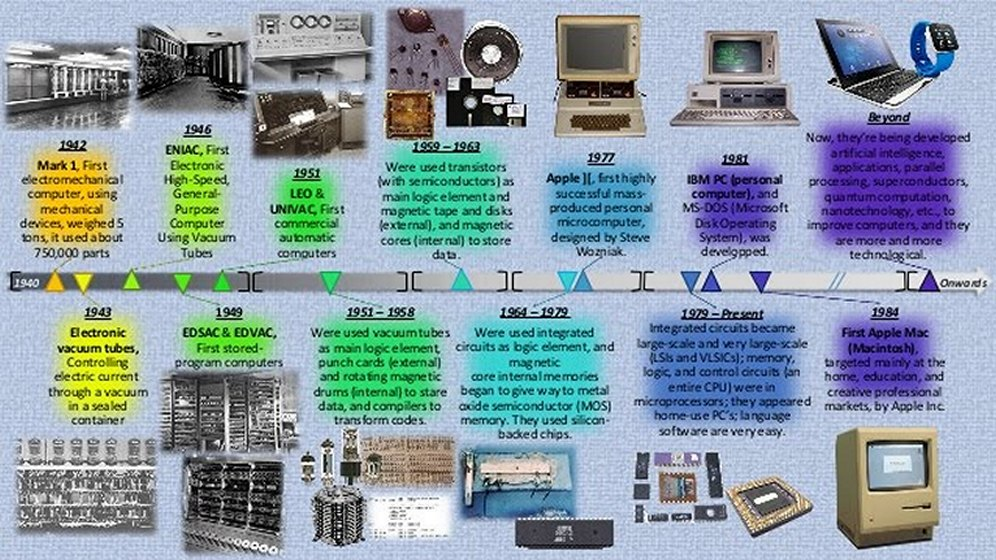

Firstly, what is a computer?
A computer is a machine that can be instructed to carry out sequences of arithmetic or logical operations automatically via computer programming. Modern computers have the ability to follow generalized sets of operations, called programs. These programs enable computers to perform an extremely wide range of tasks.
Who invented the computer?
"Who invented the computer?" is not a question with just one simple answer. The real answer is that computers were not invented at once they were made of too many parts invented by too many people, each of these parts are considered as a different invention, which together make up a computer we use nowadays.
A complete history of computing would include a multitude of diverse devices such as the ancient Chinese abacus, the Jacquard loom (1805) and Charles Babbage's "analytical engine" (1834).
It would also include discussion of mechanical, analogue and digital computing architectures.
As late as the 1960s, mechanical devices, such as the Marchant calculator, still found widespread application in science and engineering.
During the early days of electronic computing devices, there was much discussion about the relative merits of analogue vs. digital computers.
In fact, as late as the 1960s, analogue computers were routinely used to solve systems of finite difference equations arising in oil reservoir modelling.
In the end, digital computing devices proved to have the power, economics and scalability necessary to deal with large scale computations.
Digital computers now dominate the computing world in all areas ranging from the hand calculator to the supercomputer and are pervasive throughout society.
Therefore, this brief sketch of the development of scientific computing is limited to the area of digital, electronic computers.